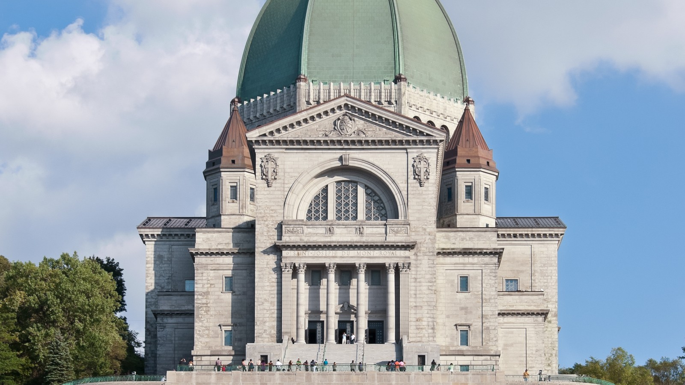

Salve
Salve in situm interretialem paroeciae.
Oratoire Saint-Joseph du Mont-Royal, anno 1904 fundata, in Montréal, Québec sita est. Hic situs speculum non officiale est, sub doctrina EVE Glyph Design paratum, eadem cura editoriali qua situs officialis paroeciae. Fons officialis manet saint-joseph.org.
Una paroecia, unus populus
Fides localiter vivitur, cum communitate quae orat, celebrat et alios curat.
Horarium Missarum
| Dies | Hora |
|---|---|
| Dies Dominica — crypta (gallice) | 7 h · 8 h · 9 h 30 · 16 h 30 · 19 h 30 |
| Dies Dominica — basilica (gallice) | 11 h · 12 h 30 |
| Dies Dominica — anglice / hispanice | 11 h 15 · 15 h |
| Feria secunda – Sabbato — crypta | 7 h · 8 h 30 · 10 h · 11 h 30 · 16 h 30 · 19 h 30 |
| Feria secunda – Sabbato — anglice | 12 h 15 |
| Feria quarta — Missa pro infirmis | 14 h |